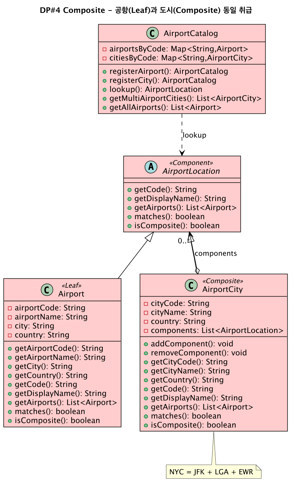

컴포지트 패턴,
개별과 묶음을 한 가지로 다루다
파일과 폴더, 위젯과 컨테이너처럼 "하나"와 "여럿의 묶음"이 섞인 구조가 있다. 컴포지트는 이 둘을 같은 인터페이스로 묶어, 트리 어디서든 분기 없이 똑같이 호출하게 만든다.
컴포지트 패턴(Composite Pattern)의 의도는 한 문장이다. 객체들을 트리 구조로 구성해 부분-전체(part-whole) 계층을 표현하고, 클라이언트가 개별 객체와 복합 객체를 동일하게 다루도록 한다. 핵심은 "동일하게(uniformly)"다. 잎(개별)이든 가지(묶음)이든 같은 인터페이스로 호출되므로, 클라이언트 코드에는 "이게 하나야, 묶음이야?"를 묻는 분기가 사라진다.
왜 필요한가? 파일 시스템을 생각하자. 파일 하나의 크기를 구하는 것과 폴더 전체의 크기를 구하는 것은 다른 일처럼 보인다. 폴더는 안에 또 폴더와 파일을 품을 수 있기 때문이다. 분기로 풀면 코드 곳곳에 if (폴더면) 자식을 순회하고 ... else (파일이면) ...가 박힌다. 새 종류가 생기면 그 분기를 전부 찾아 고쳐야 한다. 컴포지트는 파일과 폴더가 모두 같은 getSize()를 갖게 하고, 폴더의 getSize()는 자식들의 getSize()를 재귀로 합산하게 만든다. 클라이언트는 그냥 getSize()만 부른다 — 대상이 파일인지 폴더인지 알 필요가 없다.
구조 — Leaf와 Composite가 같은 Component를 구현한다
역할은 셋이다. Component는 잎과 가지가 공유하는 공통 인터페이스(operation(), 그리고 보통 add()/remove())다. Leaf는 자식이 없는 개별 객체로, 자기 일만 한다(파일). Composite는 자식 Component들을 리스트로 품고(합성), operation()에서 자식 전체를 순회하며 각자의 operation()을 재귀로 호출한 뒤 결과를 모은다(폴더). Leaf와 Composite가 같은 Component를 구현한다는 점이 "동일하게 다루기"를 가능하게 하는 핵심이다.
코드 — operation()이 자식을 재귀로 순회한다
Composite의 getSize()는 자식 리스트를 돌며 각 자식의 getSize()를 부르고 합산한다. 그 자식이 또 Composite면 자연히 더 깊이 재귀가 들어간다. Leaf의 getSize()는 자식이 없으니 자기 크기만 돌려준다(재귀 종료점). 클라이언트는 트리의 어느 노드든 똑같이 getSize()만 호출한다.
참여자와 결과
참여자
Component(공통 인터페이스), Leaf(개별 객체), Composite(자식 Component들을 합성)
장점
개별과 묶음을 동일 취급, 분기 제거, 트리 확장 용이, 재귀로 깊이 무관 처리
단점
인터페이스 통일을 위해 Leaf에 무의미한 메서드가 생길 수 있음(투명성-안전성 긴장)
설계 트레이드오프 — add/remove를 어디에 둘까
컴포지트에서 가장 자주 출제되는 설계 결정은 add()/remove()를 Component(공통 인터페이스)에 둘지, Composite에만 둘지다. 둘은 "투명성"과 "안전성"이라는 상반된 가치를 따라 갈린다.
| 비교 축 | 투명성 우선 (Component에 둠) | 안전성 우선 (Composite에만 둠) |
|---|---|---|
| add/remove 위치 | 공통 Component 인터페이스 | Composite 클래스에만 |
| 클라이언트 시점 | Leaf와 Composite를 완전히 동일하게 취급 | 자식 조작 전 Composite로 형변환 필요 |
| 위험 | Leaf에서 add() 호출 시 런타임 오류(무의미) | 동일 취급이 깨짐(투명성 손실) |
투명성(transparency) 우선은 add()/remove()를 공통 Component에 선언해 클라이언트가 잎과 가지를 한 치의 구분 없이 다루게 한다. 대신 Leaf에도 그 메서드가 생기는데, 잎은 자식을 가질 수 없으니 호출하면 무의미하거나 예외를 던진다 — 컴파일 시점에 막을 수 없는 위험이 남는다. 안전성(safety) 우선은 반대로 add()/remove()를 Composite에만 두어 Leaf에서 잘못 호출할 길을 원천 차단한다. 대신 클라이언트가 자식을 조작하려면 대상이 Composite임을 알고 형변환해야 하므로, "둘을 동일하게 다룬다"는 컴포지트의 본래 매력이 일부 희생된다. 정답은 없고 맥락에 따른 선택이라는 점이 핵심이다.
add/remove를 Component에 두면 투명성(Leaf에선 무의미·위험), Composite에만 두면 안전성(형변환 필요)이라는 트레이드오프가 단골이다. ② Composite vs Decorator — 구조는 닮았지만 컴포지트는 여럿을 모아 전체-부분 트리를 만들고, 데커레이터는 하나를 감싸 기능을 더한다. ③ Composite의 핵심은 "operation()이 자식을 재귀 순회하며, 클라이언트는 Leaf와 Composite를 구분하지 않는다"는 것이다.
어댑터(모양 변환), 데커레이터(기능 누적), 컴포지트(트리 묶음) — 세 패턴 모두 합성과 위임이라는 한 무기로 서로 다른 목적을 풀었다. "객체를 무엇을 위해, 몇 개나 감싸는가"를 따라가면 셋의 구분이 또렷해진다. 다음 장에서는 객체들이 어떻게 협력하며 행동하는가를 다루는 행위 패턴(Behavioral Pattern)으로 넘어간다.
🛫 대한항공 예약시스템 — 실전 적용
직항·환승·다도시 여정을 segment 트리로 묶어, 단일 구간과 복합 여정을 클라이언트가 동일하게 다룬다.
